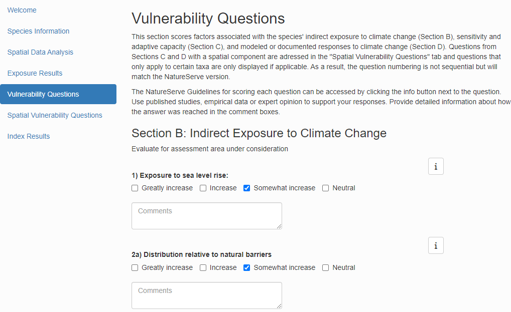
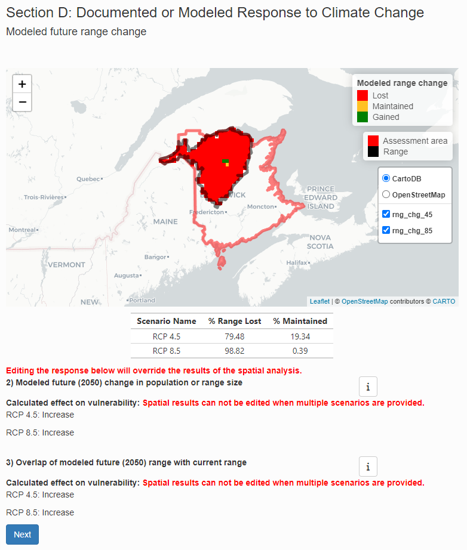
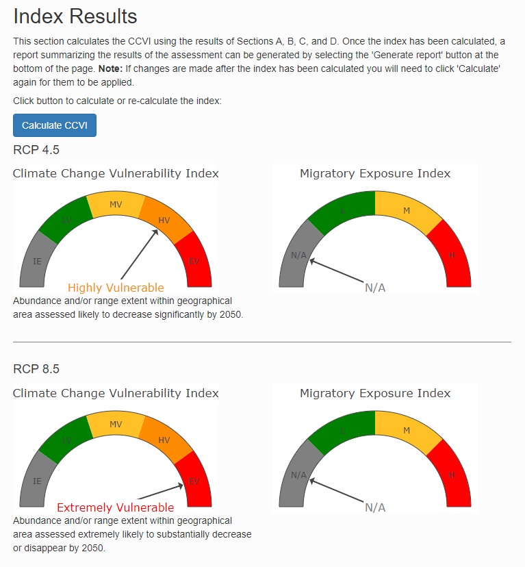
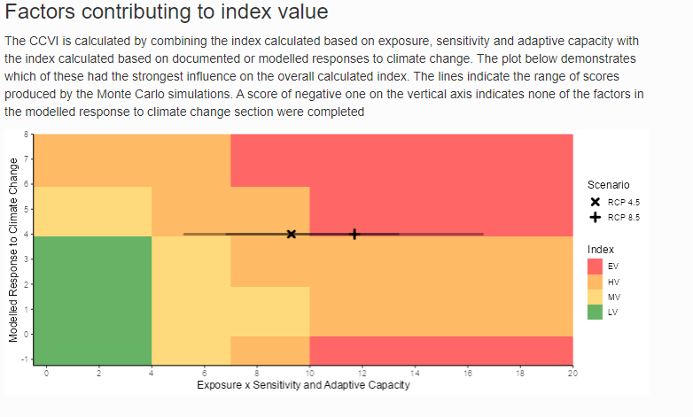

Introduction
The ccviR app implements the NatureServe Climate Change Vulnerability Index (CCVI) in a Shiny App. The app allows all of the geospatial aspects of calculating the CCVI to be done in R, removing the need for separate GIS calculations. It also includes new features and enhanced user friendliness to make it easier to calculate the index and explore the results.
The NatureServe CCVI is a trait based climate change vulnerability assessment framework. It includes three commonly used components of vulnerability: exposure, sensitivity and adaptive capacity. In addition, it optionally incorporates the results of documented or modeled responses to climate change.
Exposure is assessed by determining the proportion of the species range that falls into 6 classes of temperature and moisture change which is used to assign an exposure multiplier. Sensitivity and adaptive capacity are assessed by scoring 23 vulnerability factors, on a scale from 0 (‘neutral’) to 3 (‘greatly increases vulnerability’). These scores are then multiplied by the exposure multiplier and are summed to give a total score for this section. Factors that cannot be answered can be left blank and contribute 0 to the total score. If fewer than 13 factors are scored the index value cannot be calculated.
In addition, there are 4 vulnerability factors for documented or modeled responses to climate change that can optionally be scored on a similar scale. These scores are simply summed to get the total score for this section. An index value is then determined for the two sections (exposure x sensitivity and adaptive capacity, and documented or modeled responses) by applying a set of thresholds to the scores. The two index values are then combined using a table that gives more weight to the sensitivity and adaptive capacity section. The possible index values are Less Vulnerable, Moderately Vulnerable, Highly Vulnerable, Extremely Vulnerable or Insufficient Evidence (if not enough factors of the CCVI are scored).
For more detailed information on how the index works and how each factor is scored see the NatureServe CCVI Guidelines and the references below.
Run a demonstration
Before using the app to assess a real species we recommend walking through the app with the demo data set provided.
If you have not already installed ccviR, begin by installing the ccviR package from GitHub with:
# install.packages("devtools")
devtools::install_github("LandSciTech/ccviR")Then, run the code below to launch the app in your browser:
library(ccviR)
run_ccvi_app("demo")Getting started
Upon launching the app, you are greeted with the Welcome Tab which provides information on the Index and the data needed to calculate it. Data needed to calculate the Index includes a climate data set, species-specific spatial data sets, and species-specific sensitivity and life history data.
The species-specific spatial datasets that can be provided are as follows:
- Species North American or global range polygon (required): The complete area occupied by the species in North America.
- Assessment area polygon (required): The area within which the species vulnerability is being assessed. For example, a country, province, state, or protected area.
- Physiological thermal niche (PTN) polygon: The PTN polygon should include cool or cold environments occupied by the species that may be lost or reduced in the assessment area as a result of climate change.
- Non-breeding range polygon: If applicable, the area outside North America occupied in the non-breeding season.
- Projected range change raster: The modeled change in the species range caused by climate change. The values of the raster cells should indicate whether the cell was lost, maintained, gained or was never included in the range.
The species range and assessment area are required but other spatial
data sets are optional. If the non-breeding range is not included the
migratory exposure index will not be calculated. If spatial data for the
projected range change or PTN are not provided these factors can be
filled in manually based on non-spatial information. All polygon data
should be provided as a shapefile while raster data can be in any file
format accepted by the terra::rast function but “.tif”
files are recommended.
For this demonstration, all of the data is provided in the package. This includes a small climate change data set covering New Brunswick for the RCP 4.5 and RCP 8.5 emissions scenarios, a species range polygon, an assessment area polygon, a PTN polygon, and range change rasters for both RCP 4.5 and RCP 8.5 scenarios.
Press “Start” to begin calculating the index.
Species Information
On this page, you will provide some basic details about the species. Make sure to select the appropriate taxonomic group since some aspects of the index are conditional on this. To better understand the meaning of the cave dwelling and migratory check boxes see the NatureServe Guidelines.
For this demonstration select “Vascular Plant” from the Major Taxonomic Group drop down. Do not check the cave dwelling or migratory boxes. Input any text for the remaining boxes. Click “Next”.
Spatial Data Analysis
On this page, you will load the spatial data used by the index and run the spatial analysis for exposure to climate change. For the “Folder location of prepared climate data” you need to tell the app where you stored the climate data that it should use. For a real assessment this will either be the folder that you unzipped the downloaded climate data into or the output folder you selected in the data preparation app. For this demonstration the prepared climate data can be found under “clim_files > processed”. Click on the processed folder then click Select in the bottom right of the pop-up.
Next, select the range polygon for the species (“rng_poly.shp”), the assessment area polygon (“assess_poly.shp”), and the physiological thermal niche polygon (“ptn_poly.shp”). Leave the non-breeeding range blank since we are assuming this species is not migratory.
For the projected range change raster, select “Yes, multiple range change rasters will be provided, one for each scenario.” This will open a new section where you can select a raster file for each scenario. Select “rng_chg_45.tif” for the RCP 4.5 scenario and “rng_chg_85.tif” for the RCP 8.5 scenario. If range change rasters are not available for each scenario, a single raster can be used but this assumes the projected range change is the same in all scenarios.

Next, specify how the input raster should be classified into lost, gained, maintained or not suitable. The classification will depend on the values of the raster you are working with. For this demonstration, use the default values which are for a raster where lost is -1, maintained in 0, and gained is 1. Not suitable is not used so it is flagged with 99.
The the gain multiplier allows you to ignore gains by setting it to 0 but we will leave it at 1 which assumes that the model has already accounted for whether habitat gains are likely to be realized.

Then, click “Run”. A loading symbol will appear while the data is being processed. When the “Spatial analysis complete” message appears, click “Next”. To see messages explaining what the spatial analysis is doing look at the console in R studio.
Exposure Results
The Exposure Results page displays the results of the spatial data analysis as interactive maps of climate change exposure. Exposure is determined by the change in temperature or moisture that is expected to occur in the future within the species range in the assessment area.
The exposure maps are created by subtracting the future climate from the historical climate and classifying the results into six classes (low to high level of exposure) based on the median and 1/2 the interquartile range. Thus, negative values for temperature indicate warmer conditions (°C) and negative values for moisture (mm) indicate drier conditions. The tables below the maps outline the classes and the proportion of the species range in each class. The exposure multiplier is determined by the level of exposure. It is used to modify the sensitivity and adaptive capacity components of the index based on exposure to climate change.
To view the map for different scenarios uncheck the box next to the last layer to reveal the one underneath. The real climate data will cover all of North America but for the demonstration we are using a subset from New Brunswick.


The non-breeding range of the species is used to determine the migratory exposure index based on the climate change exposure index (CCEI). The CCEI is a metric of climate change exposure that indicates the level of exposure to both temperature and moisture change using the Euclidean distance. See the NatureServe guidelines for a full description. Since our demonstration species is non-migratory this section is blank.
Once you have finished exploring the maps click “Next”.
Vulnerability Questions
Vulnerability questions are detailed questions that the index uses to score the species’ indirect exposure, sensitivity, adaptive capacity and modeled or documented responses to climate change. Descriptions of how to interpret and score the questions are available in the NatureServe guidelines which are included as a pop-up if you click the “Show guidelines” button.

For the demonstration, you can select any check box that you want for each question. You can check more than one box to reflect uncertainty. Questions that are unknown can be left blank. Try a few different versions and see how it affects the result! For each question there is a comment section that should be filled in with detailed information on how the answer was reached and any evidence that was used to support the assessment. The size of the comment box can be increased by dragging from the bottom right corner.
There are three sections of vulnerability questions: Section B: Indirect Exposure to Climate Change, Section C: Sensitivity and Adaptive Capacity, and Section D: Documented or Modeled Response to Climate Change. Section B and Section C are required - if less than 10 of the 20 questions are answered the index result will be “Insufficient Evidence”. Section D is optional - if none of the questions are answered the index will be calculated without it.
Additional vulnerability questions are answered based on an analysis of spatial data, these questions are dealt with on the next page. Click “Next” to go to the next page.
Spatial Vulnerability Questions
This tab includes the vulnerability questions that have a spatial component. Each question includes a map and table showing how the data has been summarized. The check box is pre-selected based on the spatial data analysis but can be changed if needed.

The modeled response to climate change will be different depending on the climate change scenario used so the modeled future range change map includes a layer for each scenario which can be toggled on or off in the same way as the exposure maps. The responses to these questions can not be edited when multiple scenarios are used.

Note that if the check box is changed and then the “Run” button on the Spatial Analysis page is clicked again, you will see a warning that the value of the check boxes on this page will be updated to the value based on the re-run spatial analysis. The ‘Spatial Vulnerability Questions’ comments will not be affected though, so you can explain the reason for any adjustments in the comments and then remake those adjustments if they are still applicable. If the spatial data for a vulnerability question was not provided on the ‘Spatial Data Analysis’ tab then the map will not be included and the question can be answered using non-spatial information or left blank for unknown.
For the demonstration, leave the check boxes as they are and then click “Next”.
Index Results
On the Results page, click “Calculate” to calculate the index value. Once loaded, the first section presents the Climate Change Vulnerability Index and Migratory Exposure Index for each climate scenario.

The Data Completeness table highlights how many questions were answered in each section. The index is more reliable when more questions are answered.
To account for uncertainty in the vulnerability questions you can provide more than one answer to each question. The overall index value is calculated based on the average score for each question but the uncertainty in the index value is also explored using Monte Carlo simulations. In each simulation one of the selected values is picked for each vulnerability question and the index is re-calculated. This is repeated 1000 times. The Variation in Index bar chart shows the proportion of simulations that had each index value for each scenario. If all the simulations had the same index value then the uncertainty in the answers to vulnerability questions does not influence the index. If the index values are different then the index value is less certain.

The next graph shows how the scores based on the exposure and the sensitivity and adaptive capacity are combined with the scores based on the documented or modeled response to climate change, to produce the qualitative index value. The colours show the location of the thresholds used to determine the index, the points show the score for each scenario and the lines show the range of scores produced by the Monte Carlo simulations.

The last graph shows the scores for each vulnerability factor in each scenario. The scores reflect the the answer to the question and the exposure multiplier that was applied. Use the mouse to show the pop-up for each bar to get more details on how the score was reached.

If you go back and change the answer to a vulnerability question you will need to click the “Calculate” button again to see the updated results.
Render a report
You can generate a pdf report summarizing the results of the assessment by clicking the “Generate report” button at the bottom of the results page. The report produced will include the index value, a map of the range, a map of the combined moisture and temperature exposure, and the response to each vulnerability question as well as the text from the comment section. Once rendered, the report will appear in your downloads. Note this may take a long time the first time that you run it since some LaTex packages will need to be installed.
Use the app with real data
Once you have completed the demonstration you are ready to use the app with real world data.
Assemble the data
The first time you use the app you will need to acquire a climate data set that includes the predicted future change in mean annual temperature (MAT), and climate moisture deficit (CMD) as well as historical mean annual precipitation and the difference between historical maximum warmest month temperature (MWMT) and minimum coldest month temperature (MCMT). The data is classified based on the median and interquartile range for the future change in MAT and CMD and based on thresholds defined by the NatureServe Guidelines for MAP and MWMT-MCMT.
There are several versions of the data set available for download here. To use the data you need to download one of the files, unzip it and store it in a convenient location. If you wish to create your own climate data set for use with the index based on different climate data you can follow the instructions in the “Preparing Custom Climate Data” vignette. When using the app to assess multiple different species the same climate data set should be used for all species so this step only needs to be done once.
In addition to the climate data the following spatial data sets for each species can be input:
- Species range polygon (required): Ideally this is the complete area occupied by the species in North America since it is used to determine the range of climate conditions that the species can tolerate.
- Assessment area polygon (required): The area within which the species vulnerability is being assessed. For example, a country, province, state, or protected area. This can also be a subset of the species range if you are assessing sub-populations. This polygon is overlapped with the range to determine the exposure to climate change in the area of interest.
- Physiological thermal niche (PTN) polygon: The PTN polygon should include cool or cold environments occupied by the species that may be lost or reduced in the assessment area as a result of climate change.
- Non-breeding range polygon: If applicable, the area outside North America occupied in the non-breeding season.
- Projected range change raster: The modeled change in the species range caused by climate change. The values of the raster cells should indicate whether the cell was lost, maintained, gained or was never included in the range.
The species range and assessment area are required but other spatial
data sets are optional. If the non-breeding range is not included the
migratory exposure index will not be calculated. If spatial data for the
projected range change or PTN are not provided these factors can be
filled in manually based on non-spatial information. All polygon data
should be provided as a shapefile while raster data can be in any file
format accepted by the terra::rast function but “.tif”
files are recommended.
Launching the app
The app is launched by calling the run_ccvi_app()
function, which will launch the app in the user’s default internet
browser. All file selection windows will start in the current working
directory. To run the app with data stored in a different folder you can
call run_ccvi_app() with the folder path as the first
argument. For example, if all of the data is stored in a subdirectory
named “data” of the RStudio project where I am calling the function I
would call run_ccvi_app("data") to avoid having to open the
data folder every time I select a file. Alternatively, the complete path
to the data folder can be supplied
e.g. “C:/Users/username/Documents/path/to/folder” (Note that paths in R
must be supplied using forward slashes).
Saving the app
The state of the app can be saved by clicking the “Save progress” button at the bottom of the app at any point in the assessment. Choose a name and location to save a csv file with all the app content that is easy to remember, you will need to find it again to load the saved app. To load the app from a saved csv file click “Select file” under “Load data from a previous assessment” at the bottom of the Welcome page and select the saved csv file.
Note, only the path to the spatial data is stored, not the data itself, so the app will not be able to load if data is moved or its name is changed. If the data has moved, you will get an error message but you can go back to the Spatial Analysis tab and select the new file location and then press “Run” which will re-run the spatial analysis but keep the answers to the non-spatial vulnerability questions from the saved file.
Be sure to save your progress throughout the assessment to prevent the loss of data. Refreshing the app or timing out will result in your progress being lost. It is recommended that you save your progress before you step away from the assessment for an extended period of time or after you input data that would be difficult/time consuming to reproduce (ex: filling out Vulnerability Questions).
To interpret the names of the columns in the saved csv file you can download the column definitions from the bottom of the Welcome page.
Multiple related assessments
You can use a saved partially completed assessment as a template for running multiple related assessments. For example, to assess multiple populations of a species that are in different locations and may have different stressors fill in the app with all the information that will not change between populations and save the state of the app in a csv. Use this csv to load the template assessment and then modify it for each population and save the completed assessments in new csv files.
Troubleshooting
If you have a problem in the app you can look at the output in the R console for a clue about what is going wrong. The output will include messages, warnings and any error messages that are produced. You can ignore warnings unless something else has gone wrong. Most errors will show in the app but in some situations the app will go grey and the error message can be found in the R console.
If you have persistent problems with the app you can do the same
analysis using the ccviR package. You will often be able to figure out
what is causing the problem and return to the app. See
vignette("package_vignette", package = "ccviR") for a
tutorial on how to use the package. Or if you are not an R user, contact
sarah.endicott at ec.gc.ca and I will try to help.
References
Young, B. E., K. R. Hall, E. Byers, K. Gravuer, G. Hammerson, A. Redder, and K. Szabo. 2012. Rapid assessment of plant and animal vulnerability to climate change. Pages 129-150 in Wildlife Conservation in a Changing Climate, edited by J. Brodie, E. Post, and D. Doak. University of Chicago Press, Chicago, IL. https://doi.org/10.7208/9780226074641-007
Young, B. E., N. S. Dubois, and E. L. Rowland. 2015. Using the Climate Change Vulnerability Index to inform adaptation planning: lessons, innovations, and next steps. Wildlife Society Bulletin 39:174-181.